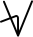

Nedanstående är en ännu ofärdig anpassning
av ASLWrite till svenskt teckenspråk. Du är
varmt välkommen att använda dig av de delar som finns. Idéer, åsikter och
erfarenheter av skrivet teckenspråk mottages tacksamt på
<sslwrite@klingonska.org>.
Den här sidan är tänkt att vara en kort och lättbegriplig introduktion
till teckenskrift – en skrift för svenskt teckenspråk. (Det finns
en detaljerad lista över symbolerna på engelska
för den som är nyfiken.)
Denna skrift (som också kan benämnas SSLWrite) är baserad
på ASLWrite (för amerikanskt teckenspråk)
som i sin tur skapats av Adrean Clark, Jules Dameron, Robert Arnold och många
andra. Den här texten är skapad med utgångspunkt i Adrean Clarks
bok How to
Write American Sign Language men med många uppdateringar. Dels har
jag tagit med nyare praxis
från ASLWrites
fejsbokgrupp, dels har jag justerat och gjort tillägg för att kunna
skriva svenskt teckenspråk.
Så vem är jag? Jag heter zrajm, och jag är
en (hörande) student av svenskt teckenspråk (vid Stockholms universitet).
Teckenskriften som jag beskriver på den här sidan föddes ur min önskan att
kunna anteckna och läsa direkt på teckenspråk utan att behöva gå omvägen över
svenska.
zrajm
P.S. För att undvika förvirring i den här texten så använder jag ordet
’tecken’ bara när jag talar om tecken i teckenspråket. När jag talar om
krumelurer skrivna på ett papper kallar jag dem istället ’markör’, ‘symbol’
eller liknande.
handalfabetet
Så här ser handalfabetet ut (om du tecknar med höger hand – använder du
vänster blir symbolerna spegelvända).
ABCDEFGHIJKLMNOPQRSTUVWXYZÅÄÖ
handsymboler
De olika handformerna betecknas av handsymboler. Här följer en lista av
handsymboler, deras handform och det namn som används
av Svenskt
Teckenspråkslexikon.
Ovanliga handformer (finns med som ’varianter’ i
bokformen av svenskt teckenspråkslexikon) är
ljusare. Svenska symboler är blåa (de finns inte i
ASLWrite, men är byggda på samma principer) – ingen av de egna symbolerna är
satta i sten (än) och förslag mottages tacksamt!
öppna handformer
sprethand
vinklad sprethand (variant)
klohand
4-hand
böjd 4-hand (variant)
W-hand
böjd W-hand (variant)
S-hand
S-hand (variant)
vinkelhand
vinkelhand (variant)
flat hand
D-hand
flat tumhand
stor nyphand
stor nyphand (variant)
stor nyphand (variant)
stor nyphand (variant)

stort långfinger
stort långfinger (variant)
runt långfinger
runt långfinger (variant)
F-hand
slutna handformer
knuten hand
knuten hand (variant)
E-hand
tumvinkelhand
A-hand
O-hand
tumhand
tumhand (variant)
Q-hand
hållhand
blandade handformer
nyphand
nyphand (variant)
rak måtthand
måtthand
måtthand (variant)
krokfinger
L-hand
pekfinger
pekfinger (variant)
vinklat pekfinger (variant)
T-hand
T-hand (variant)
långfinger
V-hand
?
V-hand (variant)
dubbelkrok
K-hand
X-hand
flyghand
U-hand
lillfinger
?
lillfinger (variant)
N-hand
N-hand (variant)
N-hand (variant)
N-hand (variant)
M-hand
liten tumvinkelhand
liten O-hand
liten O-hand (variant)
tupphand
vinklad tupphand (variant)
tupphand (variant)
böjd tupphand
rörelsesymboler
kontaktpunkt
En punkt visar var (på kroppen eller den andra handen) kontakt sker. Om
kontakt sker flera gånger skrivs två (eller fler) punkter intill varandra.
Kontakt kan skrivas vid ett specifikt finger, om det är där kontakten sker.
Kontaktpunkten kan också förekomma ensam (utan någon hand eller annan
kroppsdel som kontakten sker på) i dessa fall beskriver den en rörelse som
påminner om kontakt (som om kontakt skulle gjorts mot en osynlig yta – se
exemplet ’klicka’ nedan).
Tvärslutpunkt ()
används istället för en vanlig slutpunkt för att markera att en rörelse
slutar mer tvärt än vanligt.
Vertikalmarkör ()
Förändringslinjer ()
ser ut som vanliga rörelselinjer, men visar att en handform förändras utan
förflyttning. Vanligtvis används förändringslinjen som understrykning till
handformerna ifråga. För att vara extra tydlig att det rör sig om en
förändringslinje (utan rörelse) kan man ’spika fast’ den med
en fixpunkt ().
Neutrala läget är den position där ett tecken utförs i
om den inte har någon specifik lägessymbol. Tecken i neutrala läget avbildas
ovanifrån (som om den som tecknar tittar ner på sina egna händer). Det
betyder att en rörelselinje uppåt på pappret motsvaras av en rörelse framåt i
verkligheten, och att handflatorna är vända antingen uppåt eller nedåt om
inget annat sägs. (För att markera att en rörelse sker vertikalt används
en vertikalmarkör, och för att visa att en hand är
annorlunda orienterad används någon av kantmarkörerna.)
Kroppsläget kan skrivas ur två olika perspektiv: i
profil och framåt. (Den enda lägessymbolen som har med fler än ett
streck är halsen som har två.)
Profil – Om ett tecken har en rörelse framåt (ut från
kroppen) så skrivs tecknet med en av lägessymbolerna i profil (istället för
ur tecknarens eget perspektiv).
Framåt – När perspektivet är framåt används
rörelselinjer precis som i neutrala läget (men
utan vertikalmarkörer). Tecknet skrivs från den
tecknande personens egna synvinkel (dvs högerhanden skrivs till höger,
vänsterhanden till vänster, precis som för neutrala läget).
diakritiska markörer
Diakritiska markörer beskriver handens orientering i rummet och
rörelse i fingrar och handled. Det finns några rörelser i svenskt teckenspråk
(blåmarkerade nedan) som inte finns i det
amerikanska. (Se
också ASLWrite:
How To Capture Wrist Motion).
kant- markörer
gångjärns- markör
vrid- markör
skak- markör
fladder- markör
strö- markör
vink- markör
böjs- markör
Kantmarkörerna används för att beskriva handens orientering i
rummet. Utan en kantmarkör antas en handen vara vänd så att antingen
handflatan eller handryggen är vänd bortåt i bild, med en kantmarkör är det
istället den markerade sidan av handen som är vänd bortåt.
Kantmarkören visar att en av handens kanter är vänd bortåt (istället för
handflata/handrygg) relativt tecknets perspektiv i skriften. (Det betyder
nedåt i neutrala läget, framåt
i framåtperspektivet och, i
profil åt den bortre kroppshalvan – dvs åt vänster om tecknet avbildats
från höger [högerhänt tecknare], och höger om tecknet avbildats från vänster
[vänsterhänt tecknare].)
Gångjärns- och vridmarkörerna används för att beskriva
handledsrörelse.
Böjs-, fladder-, skak-, strö-
och vinkmarkörerna visar fingerrörelse.
Rynkad näsa () är den
enda symbolen som involverar näsan:
rynkad näsa
Ögonbryn
höjda
sänkta
sorgsna
ett höjt
kisande
Symboler som visar ögonbrynens position och används både för skriva
känslomässiga och syntaktiska uttryck. De skrivs upptill på raden och
antingen framför ett enskilt tecken, eller (lite på sned) som en parentes
runtomkring kring ett eller flera tecken.
Kroppsrörelser skrivs som en kombination av kroppssymboler och
rörelselinjer.
nickning
huvud- skakning
axelrörelse
skiljesymboler
Paus () – För att
markera slutet på en mening (i ett längre sammanhang) används en liten
cirkel. I kortare sammanhang (enskilda fraser tex) är det ofta tydligt var
meningen slutar och symbolen kan utelämnas.


 etc) visar en hands rörelse. Om
en rörelse upprepas sätts en slutpunkt ut för varje upprepning.
etc) visar en hands rörelse. Om
en rörelse upprepas sätts en slutpunkt ut för varje upprepning.


 )
)
 ).
).
 )
)

 ) visar att
armarna är korsade.
) visar att
armarna är korsade.


 ) visar att händerna rör sig som på en ratt, strecket avgränsar
rörelsen (med en hand på var sin sida om strecket).
) visar att händerna rör sig som på en ratt, strecket avgränsar
rörelsen (med en hand på var sin sida om strecket).
 ) visar att händerna
gör cirkelrörelser brevid varandra (som om de satt fast i var sin ända på
en vev).
) visar att händerna
gör cirkelrörelser brevid varandra (som om de satt fast i var sin ända på
en vev).


 ) – För att
markera slutet på en mening (i ett längre sammanhang) används en liten
cirkel. I kortare sammanhang (enskilda fraser tex) är det ofta tydligt var
meningen slutar och symbolen kan utelämnas.
) – För att
markera slutet på en mening (i ett längre sammanhang) används en liten
cirkel. I kortare sammanhang (enskilda fraser tex) är det ofta tydligt var
meningen slutar och symbolen kan utelämnas.